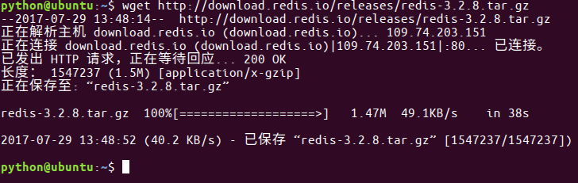

学习目标
- 了解Redis环境搭建
下载
- 当前redis最新版本是4.0，它是一个测试版本，稳定版本是3.2版本。
- 当前ubuntu虚拟机中已经安装好了redis，以下步骤可以跳过 最新稳定版本下载链接：http://download.redis.io/releases/redis-3.2.8.tar.gz
step1:下载

step2:解压
tar -zxvf redis-3.2.8.tar.gz
step3:复制，放到usr/local⽬录下
sudo mv ./redis-3.2.8 /usr/local/redis/
step4:进⼊redis⽬录
cd /usr/local/redis/
step5:生成
sudo make
step6:测试,这段运⾏时间会较⻓
sudo make test
- step7:安装,将redis的命令安装到/usr/local/bin/⽬录
sudo make install
step8:安装完成后，我们进入目录/usr/local/bin中查看
cd /usr/local/bin
ls -all
- redis-server redis服务器
- redis-cli redis命令行客户端
- redis-benchmark redis性能测试工具
- redis-check-aof AOF文件修复工具
- redis-check-rdb RDB文件检索工具
step9:配置⽂件，移动到/etc/⽬录下
- 配置⽂件⽬录为/usr/local/redis/redis.conf
sudo cp /usr/local/redis/redis.conf /etc/redis/